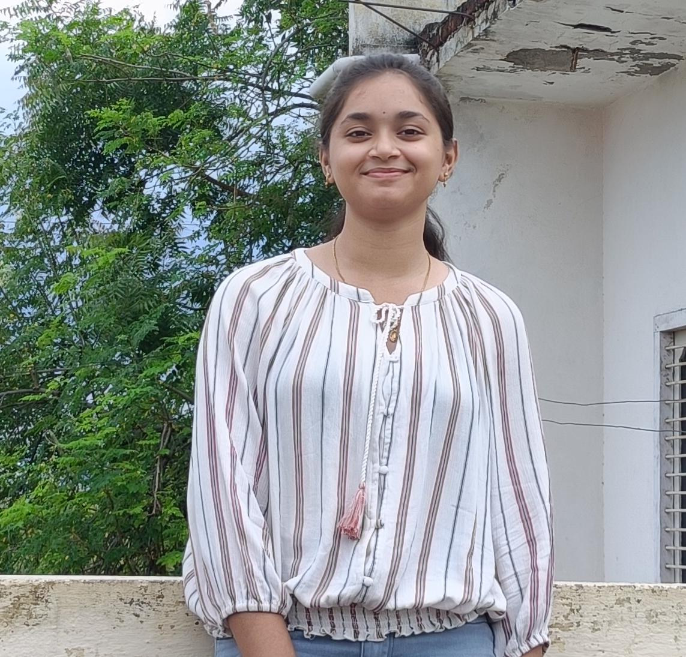

Building clean, functional interfaces with purpose and precision. Passionate about full stack development and committed to delivering quality work — on time, every time.

Hi, I'm Sruthi — a dedicated B.Tech student and Frontend Developer Intern with a genuine passion for full stack development. I believe great software is built at the intersection of technical skill and disciplined execution.
I pride myself on time management and planning — I map out my tasks, set realistic milestones, and see them through to completion. Whether it's a college project or an internship deliverable, I bring the same level of commitment to everything I build.
Currently expanding my frontend skills in a real-world internship environment while simultaneously building projects that challenge me to grow every day.
A comprehensive sports portal for the college community — built to manage sports events, player profiles, and results. Designed and developed in parallel with learning, making it a true hands-on project.
This portfolio itself — designed as part of my frontend internship task. A professional showcase of skills, projects, and personal brand built with clean semantic HTML, responsive CSS, and vanilla JavaScript.
Pursuing my undergraduate degree with a focus on Computer Science and full stack development. Actively applying classroom learning to real-world projects and internship experience.
Open to opportunities, collaborations, and conversations. Feel free to reach out through any of the channels below.